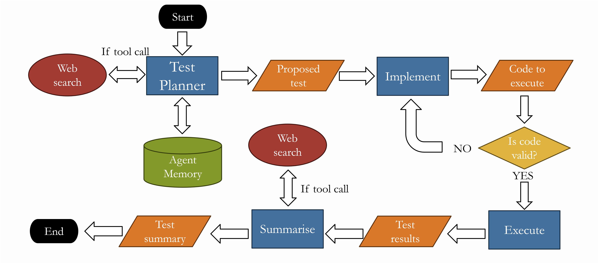
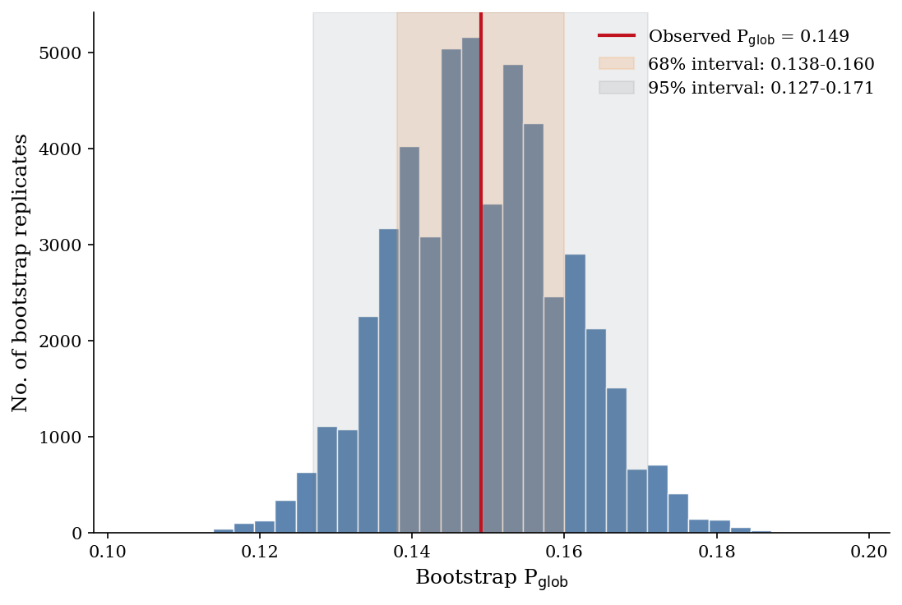

Proposed, coded, validated and executed by the agent
Abstract
Searches for anomalies in the cosmic microwave background (CMB) are intrinsically vulnerable to a posteriori choices and the look-elsewhere effect: a sufficiently flexible search can make an ordinary sky appear unusual under at least one statistic. We investigate whether this problem can be made explicit in an automated anomaly-search workflow.
A LangGraph-based agent proposes scalar CMB anomaly statistics, generates executable Python implementations, validates them, and applies them uniformly to the Planck 2018 SMICA temperature map and to 1000 simulated ΛCDM skies. Each statistic receives a local empirical p-value from its simulation distribution. The global behaviour of the search is then calibrated by applying the same minimum-p-value procedure to the simulations.
The agent completed 107 tests. The smallest local Planck p-value was Pmin = 0.002, but the simulation-calibrated global probability was Pglob = 0.149 ± 0.022 — no significant departure from ΛCDM. A Pearson correlation matrix on transformed simulation responses gives an effective number of independent tests Neff ≈ 33. The agent therefore explored a non-trivial set of statistical directions, but with substantial redundancy.
Key results
Local — before correcting for look-elsewhere
Calibrated against 1000 simulated ΛCDM skies
From the eigenspectrum of the test correlation matrix
How it works
The agent operates as a LangGraph workflow that proposes a hypothesis, writes a Python implementation of a scalar statistic, validates it against synthetic checks, runs it on the Planck SMICA temperature map and on 1000 ΛCDM simulations, and emits a result summary.
Critically, the same agent and the same null ensemble are used to calibrate the global p-value. Whatever look-elsewhere bias the agent has, the simulations also see — so an apparent anomaly only counts if the agent fails to find an equivalent one in a random sky.
Every test, hypothesis, code listing and result is preserved in a frozen catalogue. Browse all 107 with verdicts, distributions and downloadable artefacts.

Headline result

Cite this work
H. Chambers, N. Ismail, A. Moss and D. Scott, Letting the machine look elsewhere: automated anomaly testing of the cosmic microwave background, preprint (2026).
BibTeX
@article{chambers2026letting,
title = {Letting the machine look elsewhere:
automated anomaly testing of the cosmic microwave background},
author = {Chambers, Harry and Ismail, Nura and Moss, Adam and Scott, Douglas},
year = {2026},
note = {Preprint}
}Reuse
The frozen catalogue (v1.0) preserves every agent-generated hypothesis, code listing, result and plot. The machine-readable registry is available as JSON or CSV.